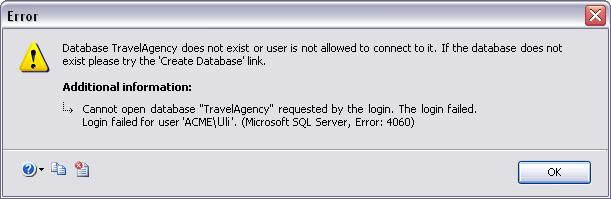
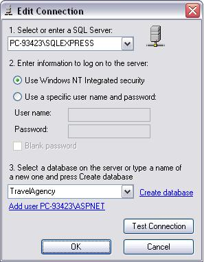

To create a complete Database when editing the connection. When you press F5 to prototype the application, or when you are creating the Database tables, GeneXus checks the login connection with the selected DBMS. If it fails, the following message is displayed:  As mentioned, you can create the entire Database by clicking on the Create Database link as shown below.  So, the Database and tables will be created immediately. ConsiderationsWhen using Java generator, the class path is set using the folder GeneXus_Installation/gxjava/drivers. If you use a non standard JDBC driver make sure to copy it to the \drivers location; otherwise the Test connection option will detail java.sql.SQLException: No suitable driver found for jdbc:protocol://server:port/db When using C# generator, make sure to install the correct Ado.Net driver on the machine and copy the assembly to the genexus installation folder.
To use double byte characters please see this sac https://www.genexus.com/en/developers/websac?data=15602;; |
| Backlinks |
| Default KB language and Database Collation |